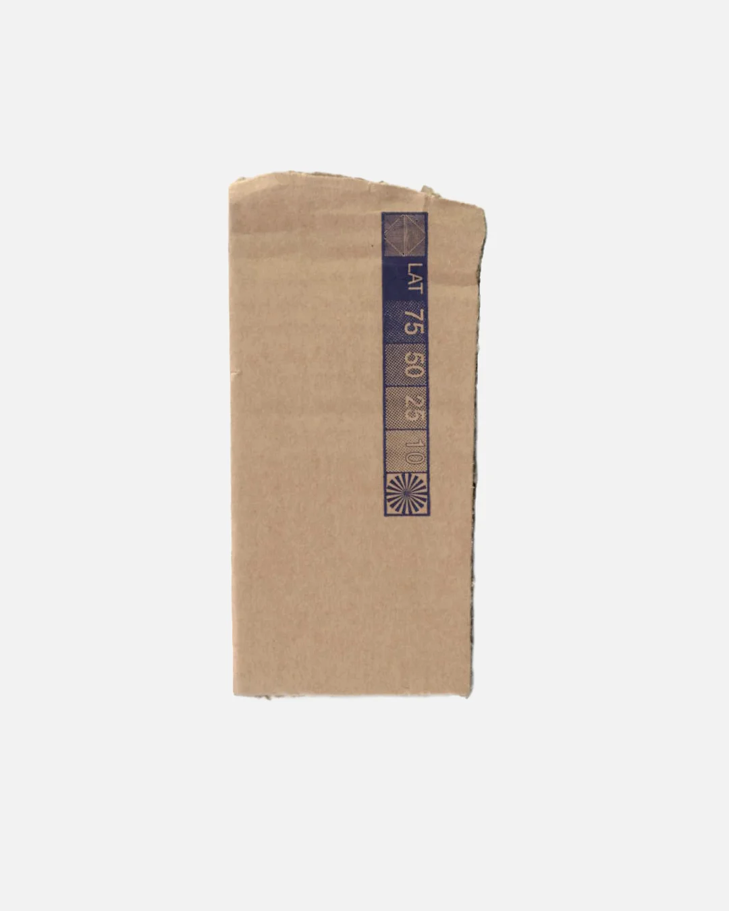
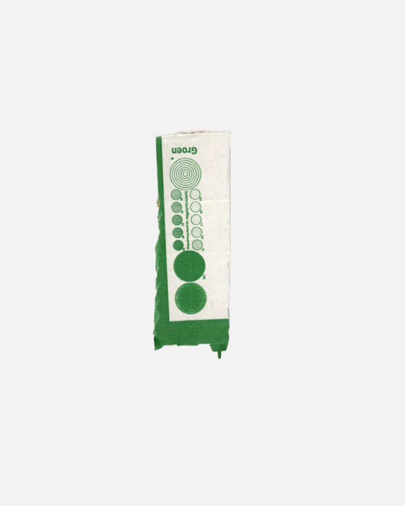
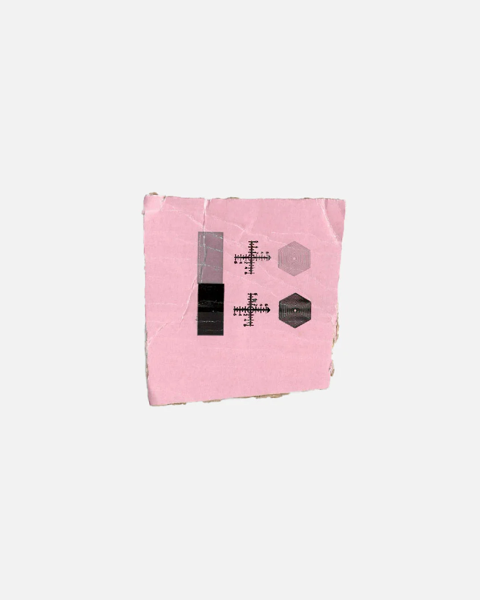
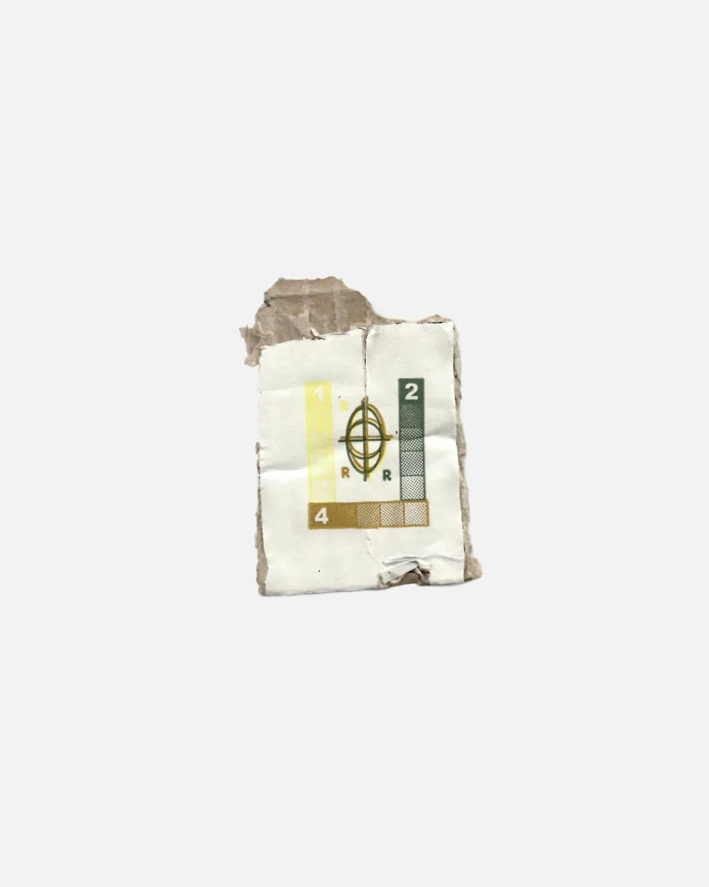
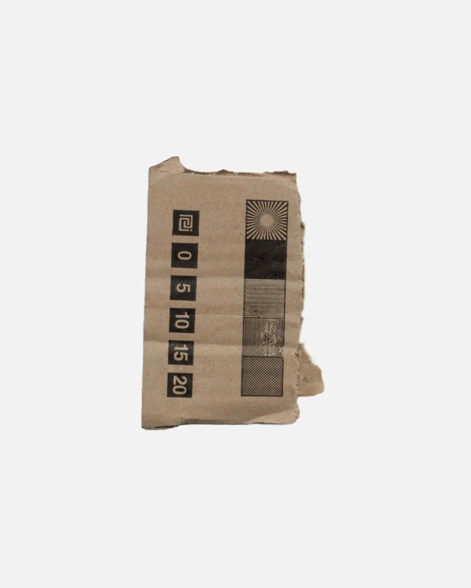

"Mo No"
Mo No is an Instagram account that collects pieces of cardboard with printed test symbols on it.
Each piece has been scanned at 300 DPI .JPG, isolated from its original background, and placed on a new canvas of 1350 × 1920px with a #f2f2f2 background.
W. https://www.instagram.com/crudo_monolith/





